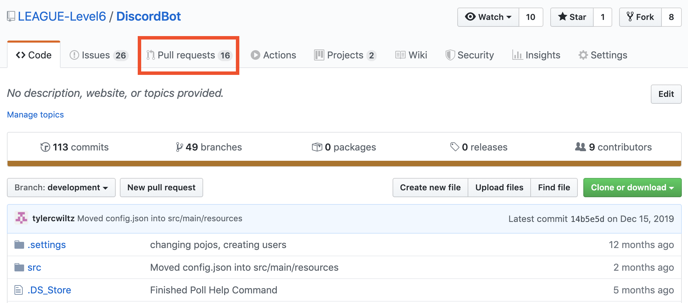
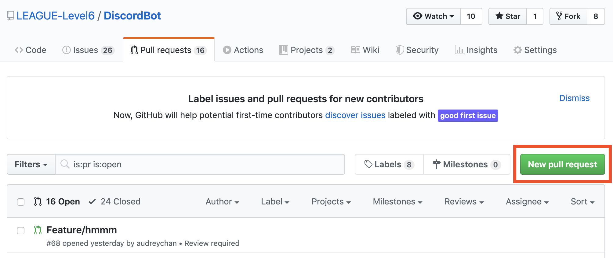
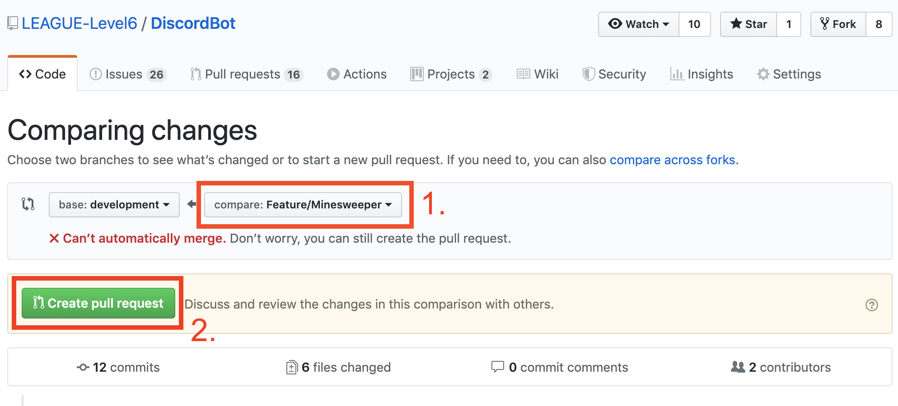

Level 6 - Creating a Pull Request
Creating a Pull Request
Once you are completely finished working on your feature, you will need to push your changes
to GitHub and then create a pull request. Creating a pull request is how you are able to
merge your new feature back into the development branch. After that, your feature will be
included in the copy of the bot that is distributed.
To create a pull request, you
can follow these steps:
- Navigate to the repository's homepage on github and select the pull request tab
- Select the "New Pull Request" button
- Select your branch in step 1, then click "Create pull request"


